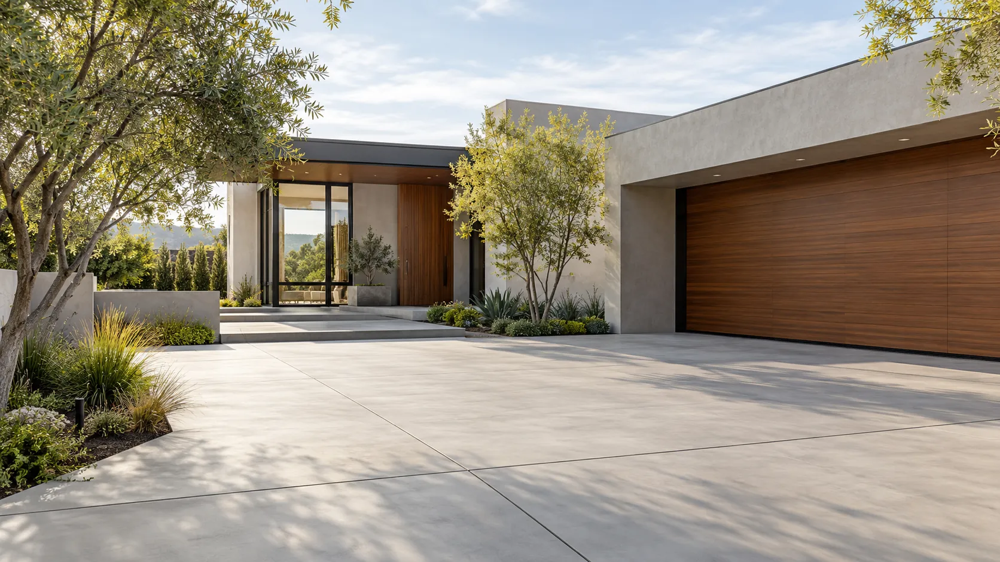
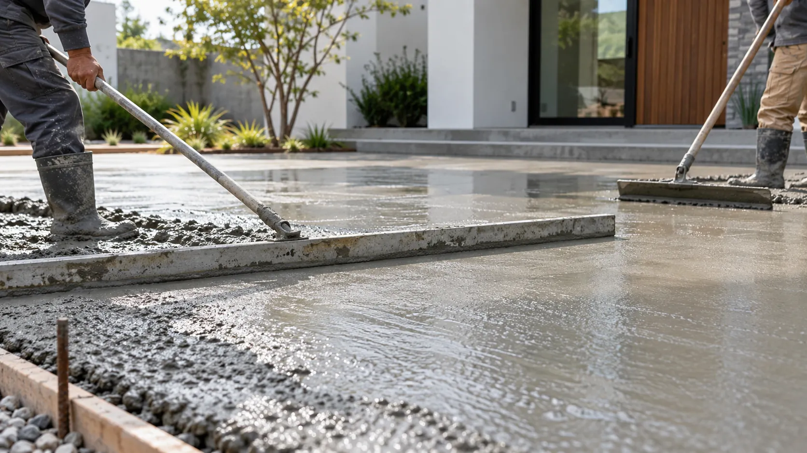
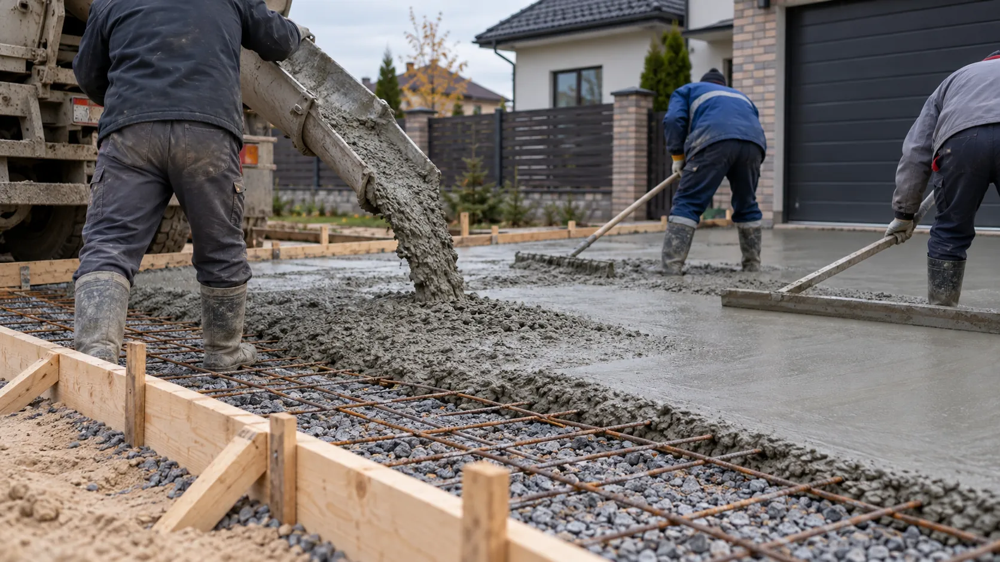
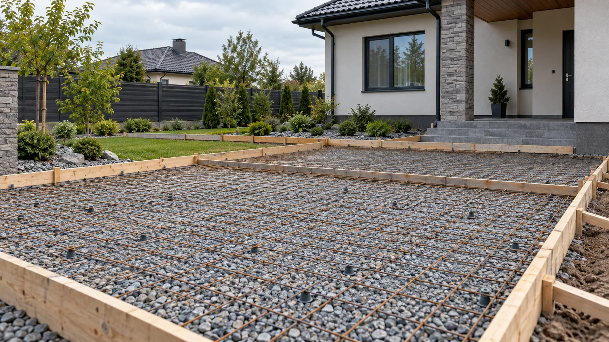

Осмотр и замер
Уточняем площадь, состояние участка и назначение площадки.
Устройство бетонного покрытия во дворе и на площадках. Решение подбираем по условиям участка и назначению будущей поверхности.
Бетонирование подходит для дворов и площадок, где нужно бетонное покрытие. Перед расчётом осматриваем участок, уточняем площадь, назначение поверхности и объём подготовки.
Объём подготовки и устройство покрытия определяем для конкретного объекта.
Уточняем площадь, состояние участка и назначение площадки.
Согласуем необходимую подготовку перед бетонными работами.
Выполняем работы по согласованному решению и объёму.
Посмотрите основные этапы и возможный результат работ.




Указаны цены «от». Точную смету составим после осмотра участка и уточнения объёма работ.
Соседние работы можно обсудить вместе с основной задачей.